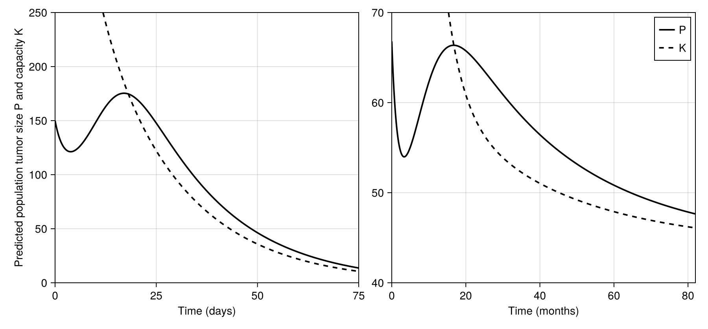

ouerdani_2015: grade B†‡
Ouerdani A, Struemper H, Suttle AB, Ouellet D, Ribba B. Preclinical Modeling of Tumor Growth and Angiogenesis Inhibition to Describe Pazopanib Clinical Effects in Renal Cell Carcinoma. CPT Pharmacometrics Syst Pharmacol 2015;4:660-668. DOI 10.1002/psp4.12001, PMC4716582.
Grade B†‡ (B with inputs read from the target figure; ‡ because those fixes were made after the first comparison): all four Figure 4 curves match after supplying two protocol inputs the paper does not give, the initial tumour size P0 and which mouse dose group the typical simulation shows. Both were taken from Figure 4 itself (P0 at t = 0; the dose group as the one of three published exposures that matches), so they are circular for those two values. Every model equation and parameter value comes from the paper, and with those two inputs set the published model reproduces 75 days (mice) and 82 months (patients) of P and K dynamics within 0.1-1 % of the axis. Three further fills are needed in both runs (the patient exposure, the days-to-months conversion and continuous treatment; see Provenance). Strict grade (article and supplement only): D.
Model
Two ODEs (Eq. 1), fitted separately to CAKI-2 mouse data and to 47 RCC patients:
dP/dt = lambda * P * (1 - P/K) - alpha * exp(-delta * t) * P
dK/dt = b * P^n - gamma * K
alpha = alpha0 * AUC^beta_alpha (Eq. 2)
gamma = gamma0 * AUC^beta_gamma (Eq. 3)P is tumour size (volume in mm^3 for mice, sum of longest diameters in mm for patients). K is the carrying capacity set by tumour vasculature. alpha is the cytotoxic effect on P that decays with resistance rate delta; gamma is the antiangiogenic loss of K. n = 1 for mice and n = 0.5 for patients (text, and confirmed by the NONMEM $DES blocks in s004.txt and s001.txt). Time is in days (Table 1 and NONMEM). Exposure AUC is constant per dose group, so there is no dosing event; "treatment" is the continuous AUC and the decaying exp(-delta t) term. Parameters: Table 1 typical values, listed with sources in model.jl.
Targets
Figure 4 (PSP4-4-660-g004.jpg, 568 px wide), "model simulation of tumor size (P) and carrying capacity (K) using the population parameter estimates". Four curves: left (mice, 0-75 d, 0-250 mm^3) P solid and K dashed; right (patients, 0-82 months, 40-70 mm) P and K. All four are authors' simulation lines (kind: curve). Both curves are black, so colour tracing was not possible; points were picked by rule from per-pixel-column dark runs (darkness-weighted centroid), assigning runs to P (continuous) or K (dashed) by position. Rules, calibration and every picked pixel are in reference/trace_fig4.jl and reference/digitise.toml. Calibration used two ticks per axis; extra ticks not used for calibration (50 d, 75 d, 50/100/150/250 mm^3, 80 mo, 82 mo, 40/50/55/60/70 mm) land on their tick marks in figures/digitise_check.png (local only: it contains the paper's figure), which also shows the picked points on the original. The curve start columns hugging the y axis and the tick columns at the right frame were excluded, so the references begin at about 0.97 d / 1.4 months (P) and K only where it enters the frame (day 12; month 15.8). Tolerance: default (RMS 0.015, P95 0.03 of the axis box). Errors are shortest two-dimensional distances in the normalised box, not vertical errors at fixed times; on the clinical panel (30 mm tall) 0.015 of the box corresponds to at most 0.45 mm vertically. Not changed after comparing. Targets frozen 2026-11-04 09:44 IST (reference CSVs, digitise.toml, tolerances in protocol.jl) before any simulation was compared.
Result
From score.toml (with fixes; "as published" run fails every curve, see below).
| curve | rms | p95 | pass |
|---|---|---|---|
| fig4leftK | 0.0010 | 0.0024 | yes |
| fig4leftP | 0.0009 | 0.0016 | yes |
| fig4rightK | 0.0112 | 0.0160 | yes |
| fig4rightP | 0.0088 | 0.0138 | yes |
As published (with the five fills listed under Provenance: mice P0 = 175 mm^3, midpoint of the 100-250 inclusion range, AUC = 30 mg/kg; patients P0 = 75 mm from a rough look at Figure 1, AUC = 771.6; 30.4375 days per month; continuous treatment): left K 0.079, left P 0.081, right K 0.033, right P 0.064 (rms), all fail. The P0 and dose fills are guesses (basis :assumption), not the paper's values; without them the run cannot start (NotRunnable), so this run measures sensitivity to the unstated inputs rather than a real as-published reproduction.
Sensitivity (diagnostic only, not graded):
- Mouse panel, P0 = 150: 100 mg/kg rms 0.001, 30 mg/kg 0.074, 10 mg/kg 0.27. Only gamma depends on AUC (beta_alpha fixed to 0), so the dose group is identified clearly.
- Patient panel: AUC 771.6 (stated mean exposure) rms 0.009/0.011 (P/K); AUC 800 rms 0.006/0.002; AUC 802.4 (Emax-predicted exposure at 800 mg, upper end of range) 0.007/0.002; AUC 629.4 fails. The 800-ish exposure fits K about six times tighter, which suggests Figure 4 used the full 800 mg dose rather than the 727 mg mean dose. I kept the stated 771.6 because both pass and it is the only value the text ties to the population.
- Days per month for the clinical axis (not stated): 30.4375 used; 30 gives rms 0.013/0.014 (still passes), 31 gives 0.005/0.008, 28 fails.
- n = 1 for patients (the mouse value) fails badly (rms 0.54), n = 2/3 for mice fails (0.05); the text and code values are supported.
- P0 read error: patients 66.0-67.5 mm all pass (rms 0.009-0.013); mice 145-155 mm^3 pass (rms up to 0.004).
Provenance
Every input the paper does not state, in both runs (protocol.jl, score.toml). Stage: the notes record only that these inputs were tried after the 09:44 freeze, so all are :after_comparison.
| fix | kind | basis | stage | runs | figures | evidence |
|---|---|---|---|---|---|---|
| p0textguess | missing | assumption | after | published | fig4 | P0 not stated; 175 = midpoint of the inclusion range, 75 = rough read of Figure 1 baselines |
| mousedosetext_guess | missing | assumption | after | published | fig4 | dose group not stated; middle group (30 mg/kg) taken |
| patientaucmean | ambiguity | interpretation | after | both | fig4 | stated mean exposure 771.6; kept although 800 fits better |
| dayspermonth | missing | standard | after | both | fig4 | days-to-months not stated; 365.25/12 |
| continuous_treatment | ambiguity | interpretation | after | both | fig4 | Eq. 1-3 and NONMEM code have no dosing stop |
| p0 | from_target | figure | after | fixed | fig4 | P0 read from Figure 4 at t = 0 |
| mouse_auc | from_target | figure | after | fixed | fig4 | 100 mg/kg chosen as the dose group that matches |
Strict grade D: the runs need values whose basis is outside the article and supplement (two guesses, a standard month length and two inputs read from Figure 4). All four passing curves (fig4leftK, fig4leftP, fig4rightK, fig4rightP) sit in Figure 4, which uses the two :from_target fixes.
Fixes
p0(:from_target). Initial tumour size P0 is not given for the typical simulation: the Methods say P0 was "set to the observed value" (individual baselines) and neither Table 1 nor the NONMEM code gives a typical value (P0 is the data column BASE/VB,$THETAhas0 FIX). Used 150 mm^3 (mice) and 66.8 mm (patients), read from Figure 4 at t = 0. This is circular (the target defines the input); it is the only available source.mouse_auc(:from_target). The text gives AUC for three dose groups (220.2, 656.8, 1140.8 ug*h/mL) and the Figure 4 caption does not say which dose the typical mouse simulation uses. 100 mg/kg (AUC 1140.8) reproduces the curves (rms 0.001); the other two do not.
The fixed run also keeps the three shared fills above (patient_auc_mean, days_per_month, continuous_treatment).
No :code fix: the NONMEM structural models agree with Eq. 1 and the n values in the text. The $THETA values in the supplement code are initial estimates (e.g. mouse lambda 0.144, K0 566) not final estimates, so Table 1 was used.
Issues found in the paper
- P0 for the typical simulation is not stated (text, Table 1, Fig. 4 caption).
- Which mouse dose (exposure) Figure 4 left uses is not stated; neither is the patient exposure for the right panel (text gives mean AUC 771.6 and the Supplementary Table 2 uses 800; the figure matches 800-ish better).
- The Figure 4 caption does not say the simulation is continuous treatment to 75 d / 82 months (mice were dosed for 24 days only; the model has no stop).
- Model time is in days everywhere (Table 1, NONMEM) but Figure 4 right is in months; the conversion is not given.
- Table 1 unit for gamma0 and alpha0 is "day-1", but with Eqs. 2-3 their units also include (ug*h/mL)^-beta. Units row "mm3 | mm" for K0 and the residual error is a combined preclinical/clinical entry (fine, but easy to misread).
- The text says n in mice was "not identifiable" and tested over 0.5 to 3; the value n = 1 for mice is stated only in the text and in the code, not in Table 1. Table 1 has no row for n at all (n = 0.5 in patients appears only in the Results text).
- Supplement code s001/s004 carry initial estimates, not the Table 1 values (can mislead anyone using the code as the final model).
- Table 1 gives the unit of b as "day-1". That holds only for n = 1 (mice). For patients (n = 0.5) the equation dK/dt = b P^n needs b in mm^0.5 per day; in general the unit is (size)^(1-n) per day. The units of alpha0 and gamma0 are also wrong when beta is not 0 (see above).
- In the NONMEM code (s001, s004) THETA(10) is used twice: as the scale on ETA(2) in V0 and as the proportional error term in
W=SQRT(THETA(10)*IPRED**2+THETA(11)**2), where it acts as a variance, while Table 1 gives the proportional error as an SD in %. No effect on a typical-value simulation. - In the NONMEM code a control run (DOSE = 0) sets all drug terms to zero, while Eq. 2 with betaalpha = 0 gives alpha = alpha0 for any exposure, so a control simulated from the equations keeps the cytotoxic term (up to 216 mm^3 difference over 75 days). No target of this atlas is a control run. Found by translating the authors' code (validation/authorscode/).
What would raise the grade
An A needs the authors' stated P0 and dose/exposure for Figure 4 so that no input has to be read off the target itself. Individual baselines and the ".csv" datasets (Clinical_data.csv, NMCaki2.csv) are not published; a stated typical P0 and the dose group would be enough.
Self-check (2026-11-04)
An independent rebuild from the paper alone (Eqs. 1-3, Table 1, the NONMEM code in s001/s004, the Figure 4 image), with separate code (plain OrdinaryDiffEq, Rodas5P, abstol = reltol = 1e-10) and no shared code. Numerical comparison with this model's curves (same patient AUC, 771.6):
| curve | max abs difference |
|---|---|
| mice P | 0.003 mm^3 |
| mice K | 0.0007 mm^3 |
| patients P | 0.2 mm (at t = 0) |
| patients K | 0.06 mm |
The only input that differs is the patient P0: 67 mm in the rebuild, 66.8 mm here (both read from the figure), which explains the 0.2 mm at t = 0.
The rebuild made the same unstated choices independently:
- Mouse dose group 100 mg/kg (AUC 1140.8). Its scan of all three AUCs gives the same ranking as the sensitivity above (P at day 75: 95, 30, 13.7 for 220.2, 656.8, 1140.8).
- Mouse P0 = 150 mm^3, read from the figure.
- Treatment continuous to 75 d and 82 months, 30.4375 days per month.
- Patient AUC: it preferred 800 (Table S2) to 771.6. At 82 months the end values are P 47.20 / K 45.65 (AUC 800) and 47.66 / 46.10 (AUC 771.6), against about 47.2 / 45.6 in the figure. This agrees with the sensitivity result here (800 fits K tighter).
It found the same inconsistencies in the paper: the units of b, alpha0 and gamma0, THETA(10) used twice, and code initial estimates that are not the Table 1 values. It found no transcription problem that changes the figure.
What this does not change: P0 and the mouse dose group were again taken from Figure 4, so they are not independent evidence and the dagger stays. Grade unchanged.
Review
Independent review, 2026-11-04. Equations, Table 1 values, the NONMEM cross-check and the digitising were found clean. The review argued for D: P0 and the mouse dose cannot be established from published information, and choosing them by matching the target gives no independent confirmation. Final decision: B†. The missing items are protocol inputs (a starting value and which of three published dose groups is shown), not model content; with them set, the published equations and parameters reproduce the full time course, which is the information a reader needs. The dagger and inputs_from_target = true in score.toml make the circularity explicit. The "as published" run uses guessed inputs and is a sensitivity check, not evidence that the published model fails.
Files
model.jl, protocol.jl, reproduce.jl, reference/ (4 CSVs, digitise.toml, trace_fig4.jl, check_overlay.jl), figures/comparison.png, figures/fig4.png (regenerated paper layout), notes.md, score.toml. Note: the skeleton in models/README.md uses include(...), which fails inside a bare Module(); this model uses Base.include(@__MODULE__, ...).
Literature check (2026-11-04)
The first author's PhD thesis (A. Ouerdani, Université Grenoble Alpes, 2016, HAL tel-01496174, https://theses.hal.science/tel-01496174v1/document) reproduces Figure 4 at higher resolution. Read from it and re-simulated: the mouse panel starts at P0 of about 150 mm^3 and matches only the 100 mg/kg group (AUC 1140.8), and the patient panel starts near 67 mm; the patient end values match the exposure predicted at 800 mg (802.4) slightly better than the mean 771.6 (a difference of about 0.5 mm). Neither text states P0, the dose group or the days-to-months conversion, so the two fixes stay :from_target.
Digitising error (2026-11-05)
The four Figure 4 references were compared with the same curves taken from the first author's thesis (HAL tel-01496174, Figure 4 at 300 ppi): RMS 0.0007 to 0.0011, so the digitising error here is about a tenth of the tolerance. The patient-panel residuals of the simulation (RMS 0.0088 for P and 0.0112 for K) are about ten times that, so they come from the model inputs, not from the digitising; the unstated patient exposure is the likely cause (802.4, the exposure predicted at 800 mg, fits K about six times more closely than the stated mean 771.6, see Sensitivity). Details: tools/digitise/error_study/.
Figures

Simulation (blue) against points digitised from the paper's figure (black), per target curve.

Regenerated in the paper's layout: fig4.
Score file
Generated by reproduce.jl; source: models/ouerdani_2015/score.toml.
as published
| curve | figure | RMS | P95 | tolerance (RMS / P95) | pass | coverage (reference / simulation, points) |
|---|---|---|---|---|---|---|
fig4_left_K | Figure 4 left, preclinical, carrying capacity K (dashed) | 0.07948 | 0.09732 | 0.015 / 0.03 | no | 82 % / 100 %, 70 |
fig4_left_P | Figure 4 left, preclinical, tumour size P (solid) | 0.08097 | 0.09855 | 0.015 / 0.03 | no | 97 % / 100 %, 90 |
fig4_right_K | Figure 4 right, clinical, carrying capacity K (dashed) | 0.03306 | 0.04239 | 0.015 / 0.03 | no | 79 % / 100 %, 70 |
fig4_right_P | Figure 4 right, clinical, tumour size P (solid) | 0.06403 | 0.1111 | 0.015 / 0.03 | no | 97 % / 100 %, 90 |
Coverage is the span of the digitised reference x values as a share of the axis, then the share of the axis on which the simulation is defined, and the number of reference points. It is reported only and does not change the grade.
with fixes
| curve | figure | RMS | P95 | tolerance (RMS / P95) | pass | coverage (reference / simulation, points) |
|---|---|---|---|---|---|---|
fig4_left_K | Figure 4 left, preclinical, carrying capacity K (dashed) | 0.001045 | 0.002414 | 0.015 / 0.03 | yes | 82 % / 100 %, 70 |
fig4_left_P | Figure 4 left, preclinical, tumour size P (solid) | 0.0008654 | 0.00156 | 0.015 / 0.03 | yes | 97 % / 100 %, 90 |
fig4_right_K | Figure 4 right, clinical, carrying capacity K (dashed) | 0.01117 | 0.01598 | 0.015 / 0.03 | yes | 79 % / 100 %, 70 |
fig4_right_P | Figure 4 right, clinical, tumour size P (solid) | 0.008824 | 0.01384 | 0.015 / 0.03 | yes | 97 % / 100 %, 90 |
Coverage is the span of the digitised reference x values as a share of the axis, then the share of the axis on which the simulation is defined, and the number of reference points. It is reported only and does not change the grade.
Source: models/ouerdani_2015/